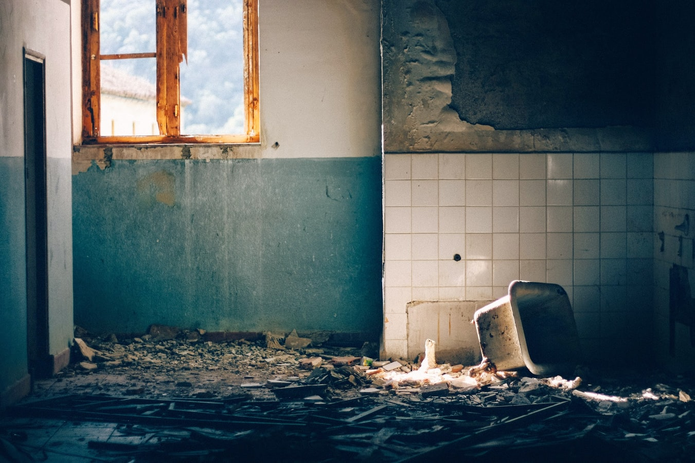

<div class="container">
  <ion-icon name="arrow-undo-circle-outline" routerLink="/login"></ion-icon>
  <div class="imagenUno" (click)="redirigir('cosas-lindas')">
    
    <h1>Cosas Lindas</h1>
  </div>
  <div class="imagenDos" (click)="redirigir('cosas-feas')">
    
    <h1>Cosas Feas</h1>
  </div>
</div>
